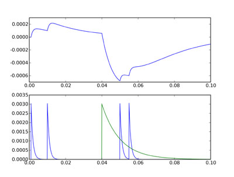

In this tutorial, we use multiple connections to solve a real problem, how to implement two types of synapses with excitatory and inhibitory currents with different time constants.
The scheme we implement is the following diffential equations:
taum dV/dt = -V + ge - gitaue dge/dt = -getaui dgi/dt = -gi
An excitatory neuron connects to state ge, and an inhibitory neuron connects to state gi. When an excitatory spike arrives, ge instantaneously increases, then decays exponentially. Consequently, V will initially but continuously rise and then fall. Solving these equations, if V(0)=0, ge(0)=g0 corresponding to an excitatory spike arriving at time 0, and gi(0)=0 then:
gi = 0ge = g0 exp(-t/taue)V = (exp(-t/taum) - exp(-t/taue)) taue g0 / (taum-taue)
We use a very short time constant for the excitatory currents, a longer one for the inhibitory currents, and an even longer one for the membrane potential.
from brian import * taum = 20*ms taue = 1*ms taui = 10*ms Vt = 10*mV Vr = 0*mV model = Model(equations = ''' dV/dt = (-V+ge-gi)/taum : volt dge/dt = -ge/taue : volt dgi/dt = -gi/taui : volt ''', threshold=Vt, reset=Vr)
As before, we’ll have a group of two neurons under direct control, the first of which will be excitatory this time, and the second will be inhibitory. To demonstrate the effect, we’ll have two excitatory spikes reasonably close together, followed by an inhibitory spike later on, and then shortly after that two excitatory spikes close together.
spiketimes = [(0,1*ms),(0,10*ms), (1,40*ms), (0,50*ms),(0,55*ms)] G1 = SpikeGeneratorGroup(2,spiketimes) G2 = NeuronGroup(N=1,model=model) C1 = Connection(G1,G2,'ge') C2 = Connection(G1,G2,'gi')
The weights are the same - when we increase ge the effect on V is excitatory and when we increase gi the effect on V is inhibitory.
C1[0,0] = 3*mV C2[1,0] = 3*mV
We set up monitors and run as normal.
Mv = StateMonitor(G2,'V',record=True) Mge = StateMonitor(G2,'ge',record=True) Mgi = StateMonitor(G2,'gi',record=True) run(100*ms)
This time we do something a little bit different when plotting it. We want a plot with two subplots, the top one will show V, and the bottom one will show both ge and gi. We use the subplot command from pylab which mimics the same command from Matlab.
figure() subplot(211) plot(Mv.times,Mv[0]) subplot(212) plot(Mge.times,Mge[0]) plot(Mgi.times,Mgi[0]) show()
The top figure shows the voltage trace, and the bottom figure shows ge in blue and gi in green. You can see that although the inhibitory and excitatory weights are the same, the inhibitory current is much more powerful. This is because the effect of ge or gi on V is related to the integral of the differential equation for those variables, and gi decays much more slowly than ge. Thus the size of the negative deflection at 40 ms is much bigger than the excitatory ones, and even the double excitatory spike after the inhibitory one can’t cancel it out.
In the next part of this tutorial, we set up our first serious network, with 4000 neurons, excitatory and inhibitory.
Solution for 2:
Simply use the line C2[1,0] = -3*mV to get the same effect.
Solution for 3:
First, set up the situation we described at the top for which we already know the solution of the differential equations, by changing the spike times as follows:
spiketimes = [(0,0*ms)]
Now we compute what the values ought to be as follows:
t = Mv.times
Vpredicted = (exp(-t/taum) - exp(-t/taue))*taue*(3*mV) / (taum-taue)
Now we can compute the difference between the predicted and actual values:
Vdiff = abs(Vpredicted - Mv[0])
This should be zero:
print max(Vdiff)
Sure enough, it’s as close as you can expect on a computer. When I run this it gives me the value 1.3 aV, which is 1.3 * 10^-18 volts, i.e. effectively zero given the finite precision of the calculations involved.